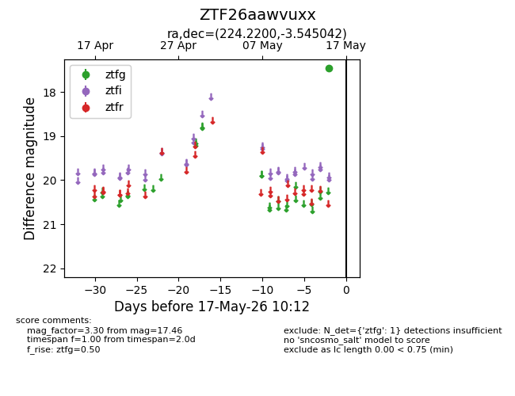
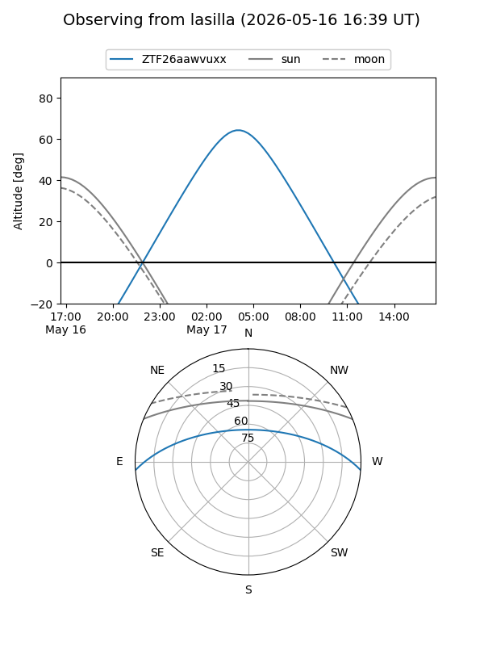
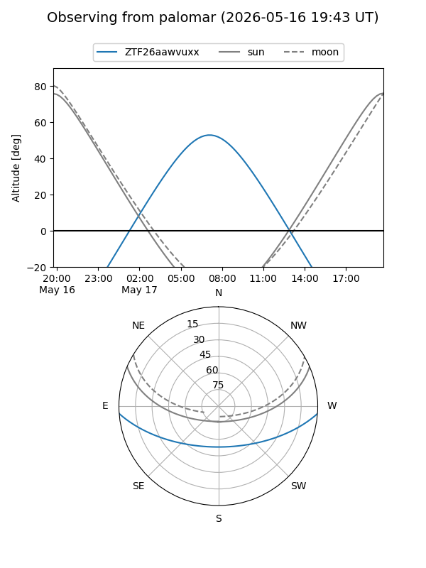

ZTF26aawvuxx
Target ZTF26aawvuxx at 2026-05-17 10:14
Aliases and brokers:
FINK: link
Lasair: link
ALeRCE: link
alt names
ZTF26aawvuxx (ztf,fink_ztf)
Coordinates:
equatorial (ra, dec) = 224.2200,-3.54504
equatorial (HMS+DMS) = 14:56:52.81,-03:32:42.15
galactic (l, b) = (352.4305,+46.91322)
Flags:
Photometry:
last ztfg=17.46
1 ztfg detections
Lightcurve

Visibility


Additional plots